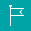
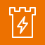

参加者と
キーの管理者
キーの管理者
鍵の組を作成し
結果を開く
結果を開く
openssl測定値を読み
希望を送り
結果を受け取る
希望を送り
結果を受け取る
aws s3 cp親インスタンスを
起動する
起動する
aws ec2KMS キーを
操作する
操作する
aws kmsKMS の判定を
振り返る
振り返る
aws cloudtrailSession Manager のターミナル
運営者として root の権限で操作する
コマンドを
入力する
入力する

東京リージョンap-northeast-1受け渡し用のバケット希望・結果・測定値

Enclaveapp.pynitro-cliclient.pyvsock-proxyKMS キー
aws-deepcuts-santaCloudTrailイベント履歴KMS の判定を記録する
インスタンスロールIAM ポリシーに KMS の権限は無い
手順 3〜11
手順 5・6・12
手順 4・7・9
手順 2
vsock
手順 8・9・11
Decrypt と文書
Decrypt と文書
手順 7・10
運営者の Decrypt
運営者の Decrypt
手順 5〜7
手順 13